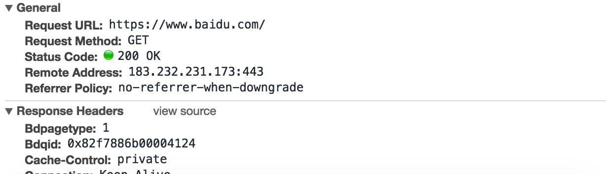
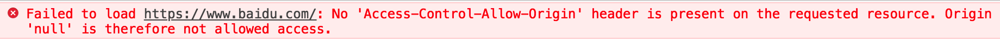

网络编程系列 同源策略和跨域请求
1.1 同源策略
1.1.1 同源策略说明
**同源策略(Same Origin Policy)**是一种约定，它是浏览器最核心也最基本的安全策略。可以说web是构建在同源策略的基础上的，浏览器只是针对同源策略的一种具体实现。
同源策略是浏览器实施的一种关键机制，主要用于防止不同来源的内容相互干扰产生安全问题。简单说，就是某个站点(源)可以读写从该站点(源)收到的信息，但是不得访问从其它站点(源)收到的信息，浏览器只允许相同来源的内容进行交互。
若不使用同源策略，那么当不知情的用户访问恶意网站的时候，该网站上运行的脚本将能够通过一定方式来访问这名用户同时访问的任何其他网站的数据和功能。[用户在浏览器当前打开的其他页面中可能已经处理登录状态，脚本可以直接获取对应的Cookie数据或登录令牌发送对应网络请求。] 这样的话，该恶意网站将可以操作用户的账户转账、阅读邮件列表等信息，存在巨大的安全风险。
同源策略的主要特点
❐ 指定域的页面可以向另一个域提出任意数量的请求，但是该页面本身无法处理返回的数据。
❐ 指定域的页面可以通过某些标签加载其它域的脚本并执行该脚本。
❐ 指定域的页面无法读取或修改其它域的cookie或DOM数据。
目前，同源策略限制以下三种行为
❐ DOM 的读取操作。
❐ AJAX 请求的发送。
❐ Cookie、LocalStorage 和 IndexDB 的读取操作。
**注意 **Ajax在发送跨域请求的时候，其实请求是发出去的，只是服务器返回的响应(response)被浏览器阻塞了，即使是返回码也获取不到。
同源策略其实是限制了不同源的读，但是并不限制不同源的写。
因为如果连请求都发不出去，相当于在源头上就限制死各网站间无法共享资源了,而且仅仅限制读操作，也就是浏览器拦截跨域网络请求的响应结果一般来说就足够了,限制读但是不限制写这样的处理方式更灵活。
1.1.2 同源策略和Ajax请求
1 | http://www.baidu.com/123.png target |
下面给出示例代码发送跨域网络请求：
1 | //当前路径：http://localhost:63342/..demo.html |
网络请求结果

通过调试发现，该请求确实发送出去甚至收到了服务器返回的响应头信息，但无法获取响应体数据。
具体报错信息显示：No ‘Access-Control-Allow-Origin’ header …`意思就是当前域名无法跨域向www.baidu.com请求数据。
1.2 跨域请求
在开发中，有时候我们自己的站点需要向其他站点发送网络请求获取服务或某些特定的资源，这就需要跨域发送网络请求。
跨域网络请求有多种方式来实现，比较常见的是：跨域资源共享( CORS )和jsonP。
1.2.1 跨域资源共享(CORS)
CORS是一个W3C标准，全称是”跨域资源共享”（Cross-origin resource sharing）。
它允许浏览器向跨域的服务器发出XMLHttpRequest请求，从而克服了AJAX只能同源使用的限制。
实现CORS通信的关键是服务器。只要服务器实现了CORS接口，就可以跨源通信，实现方式非常简单，只需要在请求的响应头中设置Access-Control-Allow-Origin字段即可。该字段的值可以设置为指定的域，表明允许该指定的域向服务器发送跨域网络请求，也可以设置为*，表示允许任何的域向服务器发送网络请求。
下面给出php服务器端的响应头设置代码：
1 | # 允许所有其他域名访问 |
实现细节请参考：阮一峰：跨域资源共享 CORS 详解
特别注意 跨域请求的时候，请求和响应都不包含Cookie数据。
1.2.2 JSONP
jsonP是JSON with padding(参数式JSON)的简写，是一种常见的跨域网络请求方案。jsonP和JSON类似，只是把真正要返回给客户端的json数据以特定的方式放在函数调用中作为参数传递。
jsonP方案利用了script标签可以跨越的特点，通过设置script标签的src属性为特定的请求路径来绕过同源访问策略。
jsonP由两部分组成：回调函数参数、特定的JSON数据
jsonP的基本结构
① 在页面的script标签中声明回调函数，该回调函数接收参数（需要和响应对应）。
② 在页面中动态的创建script标签，并为标签的src属性指定跨域的URL路径。
③ 跨域的URL路径中应该附带回调函数参数，例如http://www.xx.com?cb = fn
④ 服务器端接收到响应后返回特定格式的数据,例如：fn({"name":"zs","age":18})
⑤ 客户端script标签加载跨域路径对应的数据，其实是执行了函数调用，把服务器返回的真正数据作为参数传递给声明的回调函数。
代码示例（使用百度搜索结果）
1 |
|